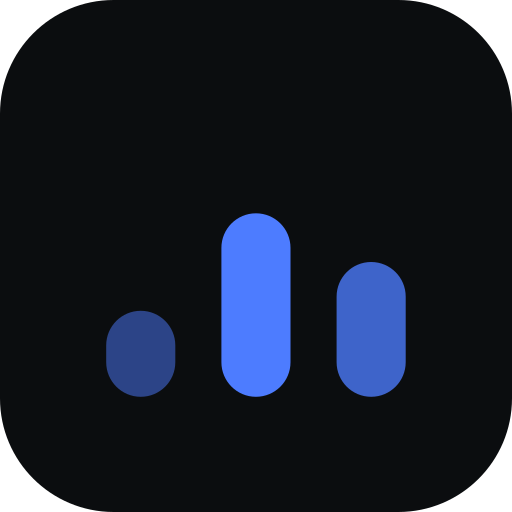

Start with what's in front of you
Today opens on the tasks due now, with times, subtasks, and a focus item at the top. Quick add captures a thought without leaving the list.

Tempo View sourceNative for your real day
Tempo is a thoughtful task manager and time tracker for Mac. See your day clearly, stay close to your priorities, and let the rest wait.
Free download · macOS · Apple Silicon
01 Your information stays on your Mac.
02 No account. No web service. No noise.
03 A calm place to return to, every day.
What's inside
Tempo keeps the day, the month, and the hours you actually spent in the same window — so planning and reviewing never means switching apps.
Today opens on the tasks due now, with times, subtasks, and a focus item at the top. Quick add captures a thought without leaving the list.
A month grid with a day panel beside it. Subscribe to your tasks as a calendar feed, and show your iCloud events alongside them.
Track time against a task or a category, fill the gaps you missed, and read the day back as a ribbon with rollups and signals.
Every project gets a board with stages you define. Drag a card forward when it moves — the task stays the same task everywhere else.
Native where it counts
A real Mac menu bar, real shortcuts, and a running timer in the status bar so you can start and stop without opening the window.
Made for the Mac
Before you download
The build is unsigned, so Gatekeeper stops the first launch. Right-click Tempo in Applications, choose Open, then confirm — macOS remembers the choice from then on.
In a local PGlite database at
~/Library/Application Support/Tempo/pglite. Nothing is uploaded, and
there is no server to sign in to.
Time Machine is the supported route. To copy the folder by hand, quit Tempo first so the database is not mid-write.
The published DMG is Apple Silicon only. On an Intel Mac you can still build from
source with npm run electron:build.
Download the latest DMG from this page — the link always points at the newest release — and replace the app. Your database stays where it is.
Free download · macOS 13 or later · Apple Silicon